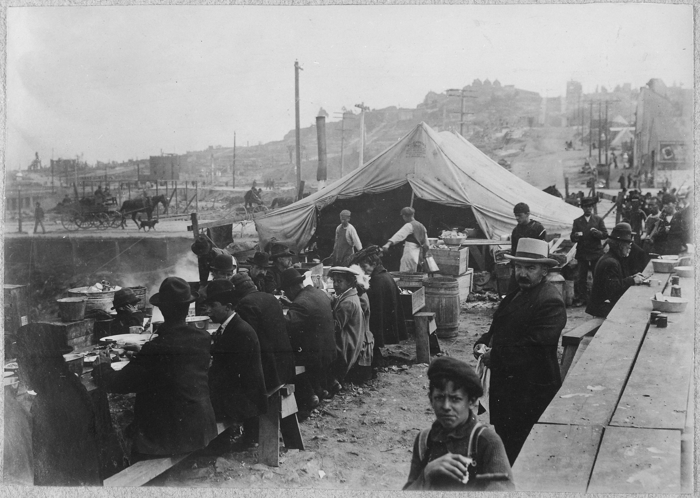

Breadline at McCauley Water Street Mission under Brooklyn Bridge, New York, c. 1930 – 1934 (Library of Congress)
Social Safety Net News
Gov. Moore directs $10 million towards food banks amid cuts to SNAP
By Sandra Smith | Capital News Service
Gov. Wes Moore declared a state of emergency on Oct. 30, two days ahead of the cuts to Maryland’s Supplemental Nutrition Assistance Program (SNAP).
Moore is directing $10 million in emergency funds from the Fiscal Responsibility Fund to support food banks, pantries, schools and mobile distribution programs. The funds will be used to purchase and distribute additional food, in an effort to support SNAP recipients.
“The federal government is looking them in the eyes and saying ‘You’re on your own,’” said Gov. Moore in a press release. “But in Maryland, we protect our people. It’s not the work of a single day or a single announcement. It’s an ongoing pledge—one that we refuse to abandon or abridge.”
The state of Maryland will not fund SNAP benefits – which are ending on Nov. 1 due to the federal government shutdown – leaving 680,000 residents, including 270,000 children, without monthly benefits.
Across the U.S., around 42 million individuals could be affected by the cuts to SNAP.
Maryland is one of 25 states that will not use state funds to continue SNAP during the shutdown.
“The Maryland Treasury holds roughly $3.5 billion in short-term cash to help bridge reimbursable federal expenses and myriad other State expenses, but we do not have confidence that the Trump Administration will reimburse us – not only for SNAP, but for any federal programs that may suffer for the duration of this senseless shutdown,” Gov. Moore said in a press release on Oct. 24.
SNAP recipients in Maryland receive an average of $180 per month according to the Center on Budget and Policy Priorities. The data shows that 59% of participants are in families with children, 32% are in families with older adults or are disabled and over 39% are in working families.
Maryland Food Bank, a non-profit organization with nearly 800 partners, distributes food to pantries, soup kitchens, shelters and faith-based organizations statewide, excluding Prince George’s and Montgomery Counties.
Meg Kimmel, President and CEO of the Maryland Food Bank, said the organization will purchase around $3 million in food to support those losing SNAP benefits, focusing on their grocery delivery program through Amazon Flex.
The Maryland Food Bank’s “Find Food” webpage has seen its highest traffic in years, reflecting the rising demand for food in lower-income communities.
Moore announced he will provide food banks, pantries, schools and mobile distribution programs with a $10 million emergency fund to address the SNAP crisis.
Democratic leaders from 25 states and the District of Columbia, including Maryland, filed a lawsuit against the Trump Administration and the U.S. Department of Agriculture on Tuesday, arguing that suspending SNAP funding is unlawful.
Alaysia Ezzard contributed to this article.
More Media
If the prospect of people going hungry doesn’t move you, consider some of the other beneficiaries of SNAP. Like Walmart, Amazon, McDonald’s and other titans of Corporate America whose profits rely on workers who are paid low wages – such low wages that without SNAP, they couldn’t afford food.
Allison Morrow, CNN, SNAP isn't just a moral imperative. It's good for business, too.

Read More
From the Archives
San Francisco Earthquake of 1906, Hot meal kitchen (George W. Haley/Wikimedia Commons)